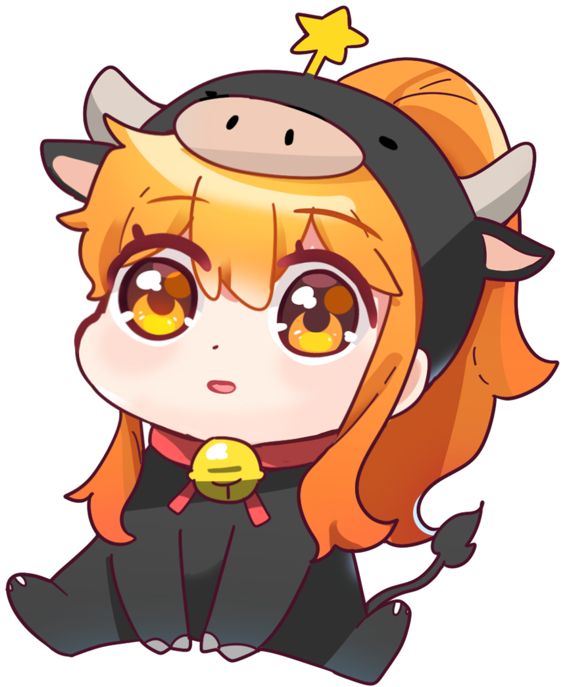

T1(에스케이텔레콤 씨에스 티원 주식회사)은 한국 통신 대기업 SK텔레콤과 미국 미디어 대기업 컴캐스트의 합작 회사로 설립된 다국적 e스포츠 주식회사이다.
2003년 1월, 임요환[3]을 중심으로 창단된 스타크래프트 팀이 동양 오리온과의 계약 만료 후 4U로 활동하던 중 2004년 4월 13일에 SK텔레콤에 인수되어 'SK텔레콤 T1 프로게임단'이 되었으며, 2019년에 SK텔레콤과 컴캐스트가 합작 법인을 설립함에 따라 팀명에서 SK텔레콤이 빠지고 'T1'으로 변경되었다.
팀명은 창단 당시부터 Team 1st 혹은 The One(1)이라는 의미를 내포하고 있다고 밝혀왔다.